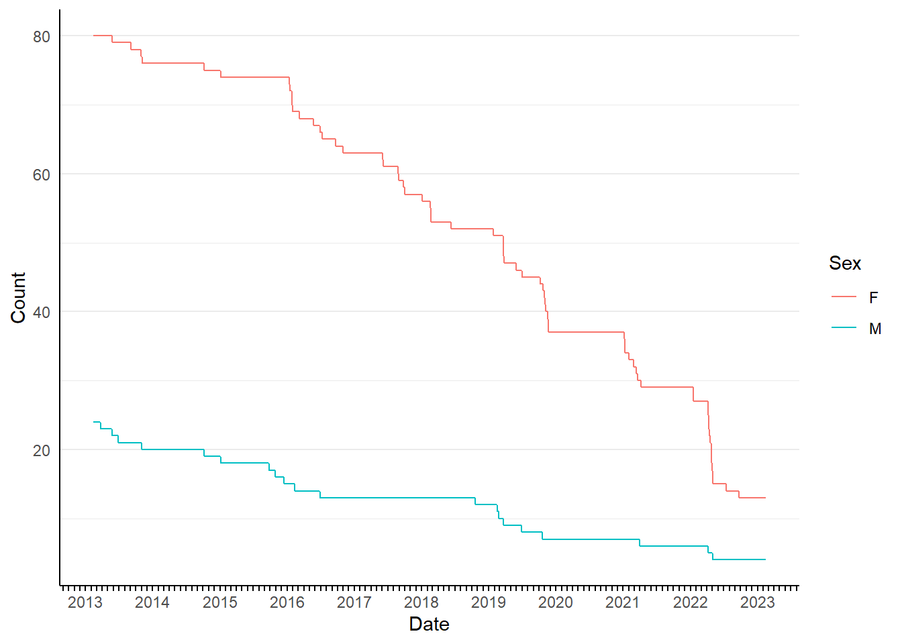
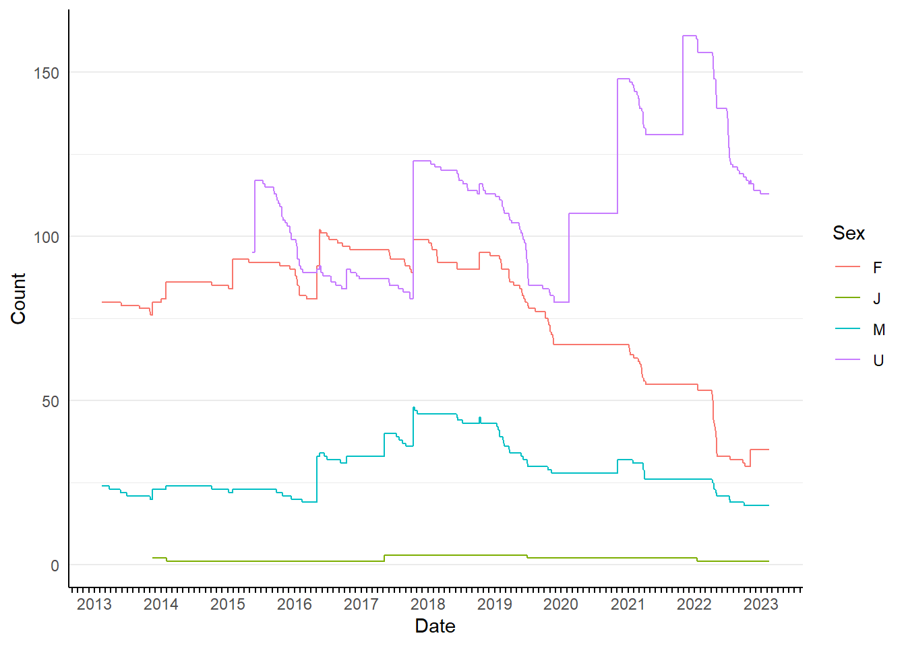
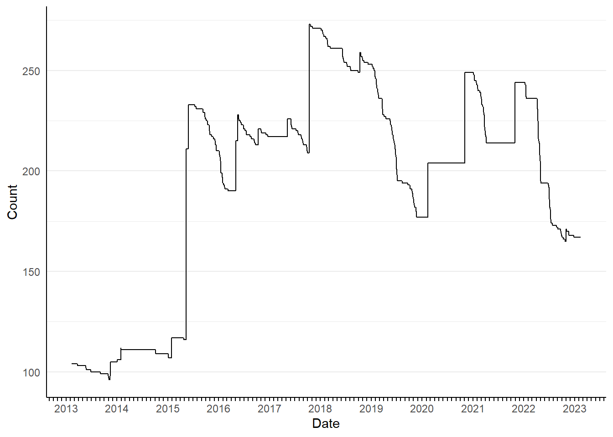
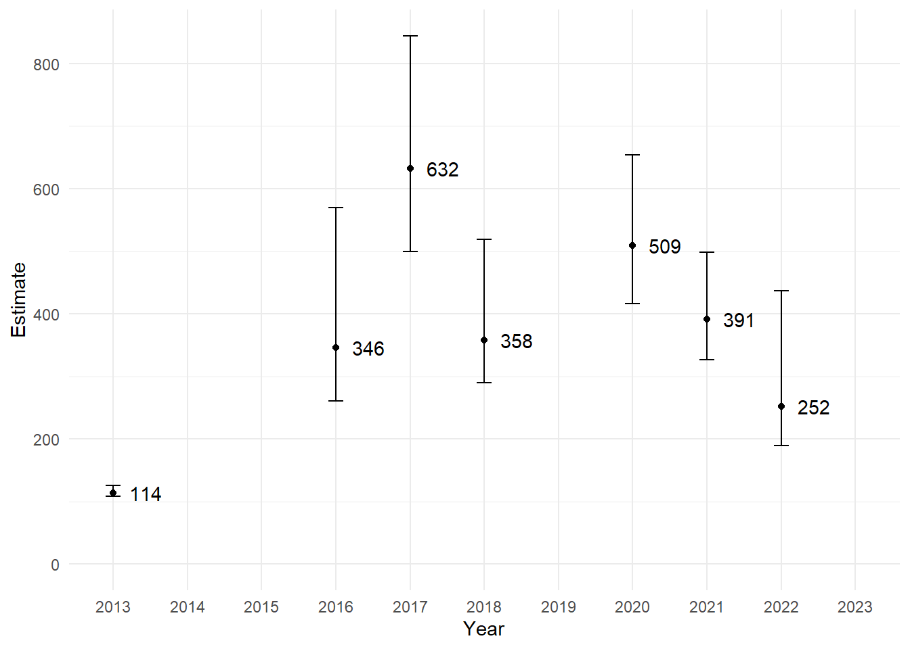
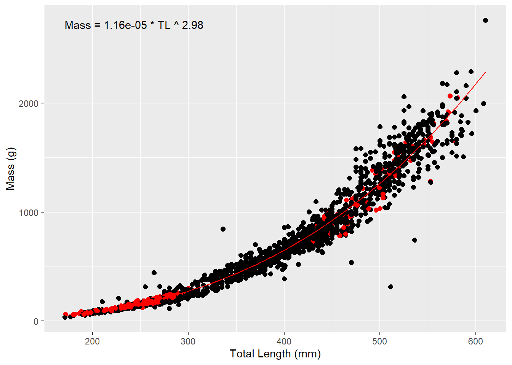

Backwater Analysis
Known Survival
Known survival analysis uses PIT scanning data to track the number of PIT tagged fish alive in the backwater on any given date. For a fish to be included in the total, it must have been scanned on or after the date (x-axis), and that scan must have occurred at least 120 days after it’s release or tagging date. This avoids including fish that were scanned within a few days of tagging, but died before contributing significantly to the population.
Figure 1 provides known survival numbers over time for the initial stocking into Yuma Cove backwater on 2013-02-11. The initial stocking was 100 females and 100 males, but only 104 (80 females and 24 males) survived to 120 days post-stocking based on PIT scanning data. The stair step pattern of this graph indicates a dramatic decline in survival over summer months in many years for both sexes. Based on PIT scanning after the most recent spawning season, the known survivors from the initial stocking include 13 females and 4 males. This represents a mean annual survival of 83.4% over 10 years.
Figure 2 provides known survival numbers over time for all PIT tagged fish stocked or captured and tagged into Yuma Cove backwater by sex. New fish are added to the figure once they have been scanned 120 days post-release (stocked or captured). Increases in the known population are therefore due to survival of tagged, naturally recruited fish or fish from supplemental stockings.

Figure 3 provides a clearer picture of the overall known PIT tagged population size over time by combining all sexes.

Table 1 breaks down the current, PIT tagged, known population of 168 fish in Yuma Cove backwater by event in which each fish was initially tagged and the sex it was assigned. Mean TL is the mean total length recorded of all known survivors at tagging.
| Event | Year | Month | TL (mm) | M | F | U | J |
|---|---|---|---|---|---|---|---|
| Stocking | 2013 | February | 408 | 4 | 0 | 0 | 0 |
| Stocking | 2013 | February | 440 | 0 | 13 | 0 | 0 |
| Stocking | 2014 | January | 360 | 0 | 2 | 0 | 0 |
| Stocking | 2015 | January | 435 | 0 | 1 | 0 | 0 |
| Stocking | 2020 | February | 363 | 0 | 0 | 12 | 0 |
| Capture | 2015 | May | 428 | 0 | 0 | 38 | 0 |
| Capture | 2016 | May | 480 | 0 | 0 | 1 | 0 |
| Capture | 2016 | May | 430 | 4 | 0 | 0 | 0 |
| Capture | 2016 | May | 452 | 0 | 9 | 0 | 0 |
| Capture | 2016 | October | 475 | 0 | 0 | 1 | 0 |
| Capture | 2016 | October | 443 | 1 | 0 | 0 | 0 |
| Capture | 2017 | May | 472 | 5 | 0 | 0 | 0 |
| Capture | 2017 | May | 272 | 0 | 0 | 0 | 1 |
| Capture | 2017 | October | 361 | 0 | 0 | 18 | 0 |
| Capture | 2017 | October | 415 | 2 | 0 | 0 | 0 |
| Capture | 2017 | October | 518 | 0 | 3 | 0 | 0 |
| Capture | 2018 | October | 525 | 0 | 2 | 0 | 0 |
| Capture | 2020 | November | 478 | 0 | 0 | 24 | 0 |
| Capture | 2020 | November | 488 | 2 | 0 | 0 | 0 |
| Capture | 2021 | October | 489 | 0 | 0 | 19 | 0 |
| Capture | 2022 | November | 143 | 0 | 0 | 1 | 0 |
| Capture | 2022 | November | 545 | 0 | 5 | 0 | 0 |
Backwater Captures and Recaptures
Capture and tagging events in Yuma Cove backwater have resulted in the capture and tagging of 2371 fish. Most fish captured are small and do not survive long enough to contribute to the overall spawning population. To separate the small fish unlikely to contribute to the adult population from the larger potential spawners, all captured fish are broken down into three size classes based on the TL at capture; 1 <350, 2 >=350 and <500, 3 >=500 mm TL.
Table 2 breaks down the size class of tagged fish during capture events in Yuma Cove backwater.
| Year | Month | 1 | 2 | 3 |
|---|---|---|---|---|
| 2013 | November | 48 | 33 | 56 |
| 2014 | January | 3 | 4 | 6 |
| 2014 | May | 0 | 15 | 59 |
| 2015 | May | 0 | 152 | 14 |
| 2016 | May | 0 | 83 | 17 |
| 2016 | October | 113 | 23 | 4 |
| 2017 | May | 3 | 14 | 2 |
| 2017 | October | 40 | 56 | 35 |
| 2018 | October | 484 | 24 | 14 |
| 2019 | November | 10 | 45 | 34 |
| 2020 | November | 230 | 66 | 46 |
| 2021 | October | 245 | 30 | 35 |
| 2022 | November | 284 | 17 | 27 |
Fish that are in size class 2 or 3 are assumed to makeup the adult population in the backwater. The proportion of these fish that are recaptures (captured with a tag) are an indication of the proportion of the total population that is tagged within the backwater. This proportion can be calculated from all capture events summarized in Table 3.
| Year | Month | N | Y | Proportion |
|---|---|---|---|---|
| 2013 | November | 10 | 79 | 0.888 |
| 2014 | January | 1 | 9 | 0.900 |
| 2014 | May | 0 | 74 | 1.000 |
| 2015 | May | 124 | 42 | 0.253 |
| 2016 | May | 56 | 44 | 0.440 |
| 2016 | October | 13 | 14 | 0.519 |
| 2017 | May | 7 | 9 | 0.562 |
| 2017 | October | 55 | 36 | 0.396 |
| 2018 | October | 15 | 23 | 0.605 |
| 2019 | November | 42 | 37 | 0.468 |
| 2020 | November | 56 | 56 | 0.500 |
| 2021 | October | 25 | 40 | 0.615 |
| 2022 | November | 19 | 25 | 0.568 |
Spawning Adult Population Size
The total population available to spawn is estimated from the recapture proportion for each year there is a fall or early winter (after September) capture event, taking the known population (Figure 4) for each year as of December 1st, and dividing by autumn recapture proportion. The recapture numbers and total captures that are used to calculate recapture proportion are adjusted for fish that avoid detection or that are harvested during the capture event by removing any fish captured but never scanned after the capture event. Population estimates were made for all years with a fall sample with more than 10 total captures after adjustment. The 95% confidence intervals are derived from the binomial distribution based on the fall capture values (trials = total captures, successes = recaptures).

Estimating Biomass
Total length (TL) and mass (g) have been recorded for 1911 fish in Yuma Cove backwater. The length-weight relationship has been well established at this point and can be used to estimate the mass of fish that only have TL recorded. One potential consequence of overcrowding in a backwater and subsequent resource limitation is that the length-weight relationship might change over time. However, this does not appear to be the case in Yuma Cove backwater as the length-weight relationship is consistent regardless of year (Figure 5); most recent measurements in red.

Using the best fit relationship between length and weight, the estimated biomass of the most recent fall sampling event was estimated in kg. Harvest and mortality have reduced the available biomass post-sampling event, and so the availability of these fish was determined based on recent PIT scanning (contacted at least once in the current year). This surviving spawning biomass is less than half the biomass from the sampling event (Table 4).
| SizeClass | Mean TL (mm) | Biomass (kg) | Count | Alive | Alive Biomass (kg) |
|---|---|---|---|---|---|
| 1 | 137 | 8.342 | 284 | 1 | 0.030 |
| 2 | 452 | 16.329 | 17 | 0 | 0.000 |
| 3 | 532 | 41.407 | 27 | 15 | 24.059 |
This biomass estimate isn’t the total population biomass. The known population in the backwater is 168 fish, and the estimated total population is 252. Most of the known population has been at large for more than 3 years, (105 out of 168 fish, Table 1). It is likely that most if not all of those fish are Size Class 3 adults, and the total spawning biomass would likely be three or four times the estimated biomass of the fall sample. The fall sample and harvest appears to have reduced the total biomass significantly, but the impact of such a reduction will not be known until the fall 2023 sample. Survival of size class 1 fish does not seem to have increased significantly after the harvest as only 1 of the 284 size class 1 fish captured and tagged during that fall harvest-survey has been contacted (PIT scanned) 120 days post-release.